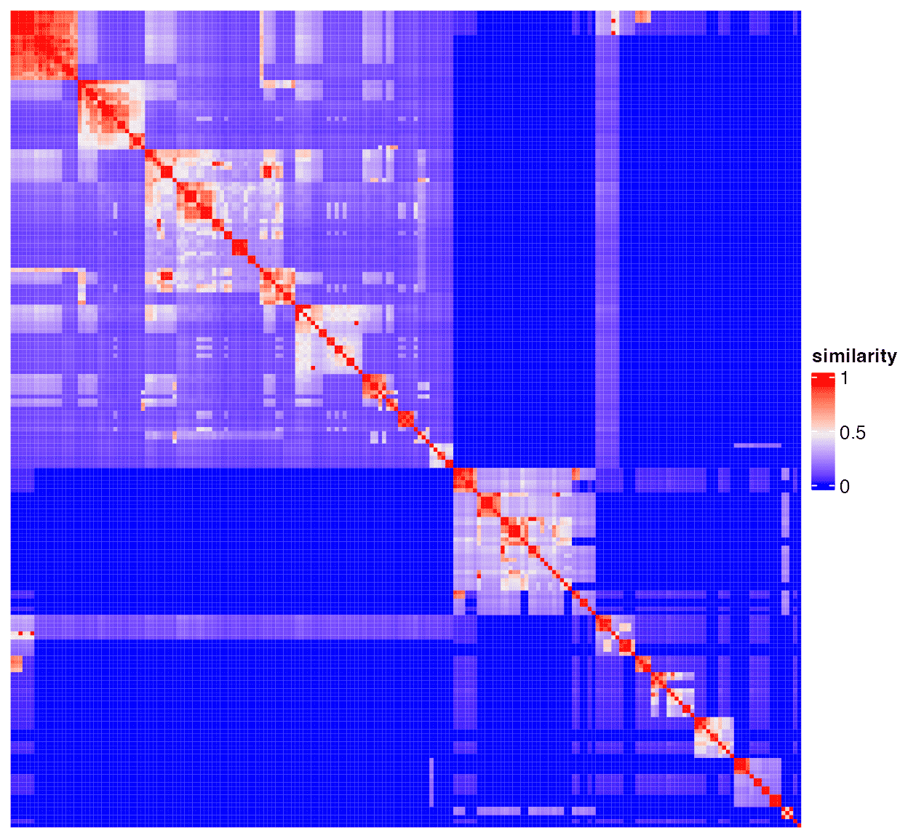
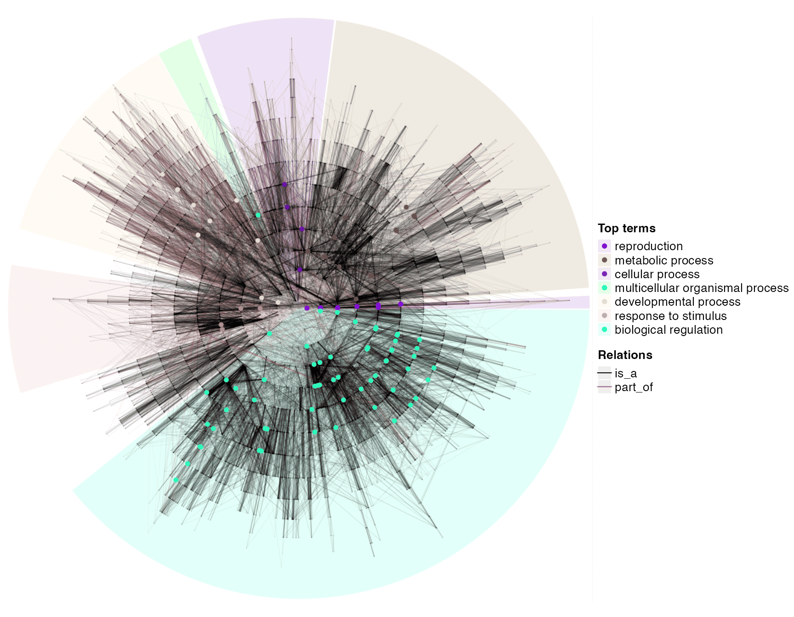
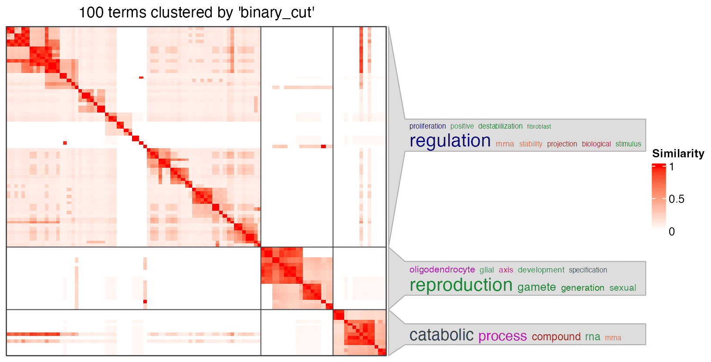
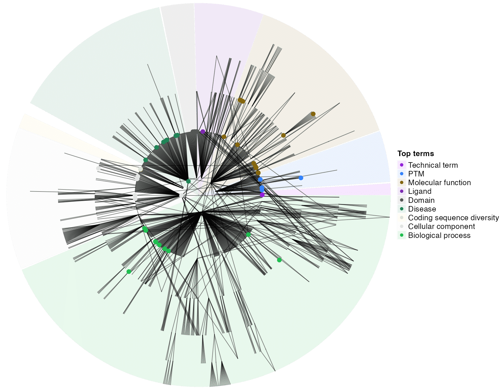
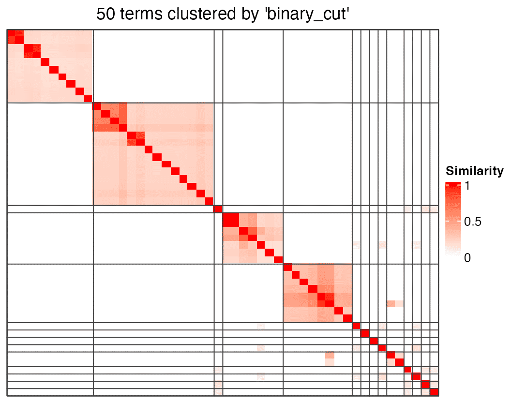

Functional enrichment
Zuguang Gu ( z.gu@dkfz.de )
2023-12-14
Source:vignettes/v10_enrichment.Rmd
v10_enrichment.RmdIn many applications, semantic similarity analysis is integerated with gene set enrichment analysis, especially taking GO as the source of gene sets. simona provides functions that import ontologies already integrated with gene annotations. simona also provides functions for over-representation analysis (ORA) and functions to integrate the ORA results with semantic similarity analysis.
GO
To add gene annotations for GO, just set the name of the “org.db” package for the specific organism. For example “org.Hs.eg.db” for human and “org.Mm.eg.db” for mouse. The full list of supported “org.db” packages can be found at https://bioconductor.org/packages/release/BiocViews.html#___AnnotationData (search "org.").
library(simona)
dag = create_ontology_DAG_from_GO_db(org_db = "org.Hs.eg.db")
dag## An ontology_DAG object:
## Source: GO BP / GO.db package 3.17.0
## 27942 terms / 55956 relations
## Root: GO:0008150
## Terms: GO:0000001, GO:0000002, GO:0000003, GO:0000011, ...
## Max depth: 18
## Avg number of parents: 2.00
## Avg number of children: 1.88
## Aspect ratio: 363.92:1 (based on the longest distance from root)
## 782.78:1 (based on the shortest distance from root)
## Relations: is_a, part_of
## Annotations: 18614 items
## 291, 1890, 4205, 4358, ...
##
## With the following columns in the metadata data frame:
## id, name, definitionAs the object dag prints, the genes stored in dag are in the EntreZ ID type. So when doing ORA, the input gene list should also be in the EntreZ ID type.
We generate a list of random genes for testing:
set.seed(888)
genes = random_items(dag, 500)
head(genes)## [1] "9820" "7187" "7694" "100628315" "252969" "51042"To perform ORA, use the function dag_enrich_on_genes().
tb = dag_enrich_on_genes(dag, genes)
tb = tb[order(tb$p_adjust), ]
head(tb)## term
## GO:0016567 GO:0016567
## GO:0032446 GO:0032446
## GO:0045930 GO:0045930
## GO:0070647 GO:0070647
## GO:1901991 GO:1901991
## GO:0031648 GO:0031648
## name n_hits
## GO:0016567 protein ubiquitination 35
## GO:0032446 protein modification by small protein conjugation 36
## GO:0045930 negative regulation of mitotic cell cycle 16
## GO:0070647 protein modification by small protein conjugation or removal 41
## GO:1901991 negative regulation of mitotic cell cycle phase transition 13
## GO:0031648 protein destabilization 6
## n_anno n_items n_all log2_fold_enrichment z_score p_value
## GO:0016567 682 500 18614 0.9339713 4.024918 0.0002039164
## GO:0032446 756 500 18614 0.8259988 3.603929 0.0006735261
## GO:0045930 226 500 18614 1.3981372 4.110105 0.0004211551
## GO:0070647 897 500 18614 0.7669040 3.578373 0.0006562499
## GO:1901991 179 500 18614 1.4349401 3.805279 0.0011276793
## GO:0031648 48 500 18614 2.2183162 4.210722 0.0017186058
## p_adjust depth
## GO:0016567 0.1976799 8
## GO:0032446 0.1976799 7
## GO:0045930 0.1976799 6
## GO:0070647 0.1976799 6
## GO:1901991 0.2647791 8
## GO:0031648 0.3362739 4We can take the significant GO terms and look at their semantic similarities.
top_go_ids = tb$term[1:200]
mat = term_sim(dag, top_go_ids)
library(ComplexHeatmap)
Heatmap(mat, name = "similarity",
show_row_names = FALSE, show_column_names = FALSE,
show_row_dend = FALSE, show_column_dend = FALSE)
And the significant GO terms on the global circular plot:
dag_circular_viz(dag, top_go_ids)
One of the use of the semantic similarity matrix is to cluster GO terms in groups, to simplify the read of the results. Here the semantic similarity matrix can be directly sent to simplifyEnrichment() function from the simplifyEnrichment package. Since the terms are from GO, there will be word cloud associated with the heatmap to show their generl biological functions in each cluster.

In the previous example, when setting the organism, we use the name of the org.db package. The value can also directly be an OrgDb object. This expands the use of the function since there are many OrgDb objects for less-studied organims available on AnnotationHub.
The following code demonstrates the use of the delphin organism (Delphinus truncatus). AH112417 is the ID of this dataset. Please refer to AnnotationHub for the usage of the package.
library(AnnotationHub)
ah = AnnotationHub()
org_db = ah[["AH112417"]]
dag = create_ontology_DAG_from_GO_db(org_db = org_db)Other ontologies
Besides GO, there are also other ontologies that have gene annotations integrated.
UniProt Keywords
UniProt Keywords (https://www.uniprot.org/keywords) is a set of controlled vocabulary developed in UniProt to describe the biological functions of proteins. It is organised in a hierarchical way, thus in a form of the ontology. The function ontology_kw() can import the UniProt Keywords ontology with gene annotations from a specific organims.
The function internally uses the UniProtKeywords package. All supported organisms can be found in the documentation of UniProtKeywords::load_keyword_genesets().
dag = ontology_kw("human")
dag## An ontology_DAG object:
## Source: UniProt Keywords
## 1202 terms / 1348 relations
## Root: ~~all~~
## Terms: 2Fe-2S, 3D-structure, 3Fe-4S, 4Fe-4S, ...
## Max depth: 6
## Avg number of parents: 1.12
## Avg number of children: 1.07
## Aspect ratio: 111.83:1 (based on the longest distance from root)
## 119.83:1 (based on the shortest distance from root)
## Annotations: 18689 items
## 2230, 150209, 316, 55847, ...
##
## With the following columns in the metadata data frame:
## id, accession, name, description, categoryAs dag shows, the gene ID type is EntreZ ID. Similar as GO, we randomly generate a list of genes and perform ORA.
genes = random_items(dag, 500)
tb = dag_enrich_on_genes(dag, genes)
tb = tb[order(tb$p_adjust), ]
top_go_ids = tb$term[1:50]Obtain the semantic similarity matrix and make plots:
mat = term_sim(dag, top_go_ids)
Heatmap(mat, name = "similarity",
show_row_names = FALSE, show_column_names = FALSE,
show_row_dend = FALSE, show_column_dend = FALSE)
dag_circular_viz(dag, top_go_ids)
We also also use simplifyEnrichment() to cluster terms in mat, but there is no word cloud around the heatmap.
cl = simplifyEnrichment(mat)
head(cl)## id cluster
## 1 Angiogenesis 1
## 2 Apoptosis 1
## 3 Cataract 2
## 4 Cilium biogenesis/degradation 1
## 5 Disease 2
## 6 Glycosyltransferase 3Ontologies from RGD
The following ontologies as well as the gene annotations are from the Rat Genome Database (RGD). Although the RGD is a database for mouse, it also provides gene annotations for other oganisms. The specific files used in each function can be found at https://download.rgd.mcw.edu/ontology/.
Note that the following functions may support different sets of organims. Please go to the documentations for the list.
Pathway Ontology
dag = ontology_pw("human")
dag## An ontology_DAG object:
## Source: pw, 7.82
## 2593 terms / 3182 relations
## Root: ~~all~~
## Terms: PW:0000001, PW:0000002, PW:0000003, PW:0000004, ...
## Max depth: 10
## Avg number of parents: 1.23
## Avg number of children: 1.26
## Aspect ratio: 79.44:1 (based on the longest distance from root)
## 94.75:1 (based on the shortest distance from root)
## Relations: is_a
## Annotations: 5956 items
## CACNA1C, MAP3K3, RASGRP3, MAP3K6, ...
##
## With the following columns in the metadata data frame:
## id, short_id, name, namespace, definitionNote that, in the pathway ontology, genes are saved in gene symbols.
To perform enrichment analysis on the pathway ontology:
# `genes` must be in symbols
tb = dag_enrich_on_genes(dag, genes)Chemical Entities of Biological Interest
dag = ontology_chebi("human")To perform enrichment analysis on CheBi:
# `genes` must be in symbols
tb = dag_enrich_on_genes(dag, genes)Disease Ontology
dag = ontology_rdo("human")To perform enrichment analysis on the disease ontology:
# `genes` must be in symbols
tb = dag_enrich_on_genes(dag, genes)Vertebrate Trait Ontology
dag = ontology_vt("human")To perform enrichment analysis on the vertebrate trait ontology:
# `genes` must be in symbols
tb = dag_enrich_on_genes(dag, genes)Session info
## R version 4.3.1 (2023-06-16)
## Platform: x86_64-apple-darwin20 (64-bit)
## Running under: macOS Ventura 13.2.1
##
## Matrix products: default
## BLAS: /Library/Frameworks/R.framework/Versions/4.3-x86_64/Resources/lib/libRblas.0.dylib
## LAPACK: /Library/Frameworks/R.framework/Versions/4.3-x86_64/Resources/lib/libRlapack.dylib; LAPACK version 3.11.0
##
## locale:
## [1] C/UTF-8/C/C/C/C
##
## time zone: Europe/Berlin
## tzcode source: internal
##
## attached base packages:
## [1] grid stats graphics grDevices utils datasets methods
## [8] base
##
## other attached packages:
## [1] simplifyEnrichment_1.11.1 BiocGenerics_0.46.0
## [3] ComplexHeatmap_2.16.0 simona_1.1.6
## [5] knitr_1.44
##
## loaded via a namespace (and not attached):
## [1] blob_1.2.4 Biostrings_2.68.1 bitops_1.0-7
## [4] fastmap_1.1.1 RCurl_1.98-1.12 UniProtKeywords_0.99.6
## [7] promises_1.2.1 digest_0.6.33 mime_0.12
## [10] lifecycle_1.0.3 cluster_2.1.4 ellipsis_0.3.2
## [13] NLP_0.2-1 KEGGREST_1.40.1 RSQLite_2.3.1
## [16] magrittr_2.0.3 compiler_4.3.1 rlang_1.1.1
## [19] sass_0.4.7 tools_4.3.1 igraph_1.5.1
## [22] yaml_2.3.7 bit_4.0.5 scatterplot3d_0.3-44
## [25] xml2_1.3.5 RColorBrewer_1.1-3 purrr_1.0.2
## [28] desc_1.4.2 stats4_4.3.1 GOSemSim_2.26.1
## [31] tm_0.7-11 xtable_1.8-4 colorspace_2.1-0
## [34] GO.db_3.17.0 iterators_1.0.14 cli_3.6.1
## [37] rmarkdown_2.25 crayon_1.5.2 ragg_1.2.6
## [40] RcppParallel_5.1.7 httr_1.4.7 rjson_0.2.21
## [43] DBI_1.1.3 cachem_1.0.8 stringr_1.5.0
## [46] zlibbioc_1.46.0 parallel_4.3.1 AnnotationDbi_1.62.2
## [49] XVector_0.40.0 proxyC_0.3.3 matrixStats_1.0.0
## [52] vctrs_0.6.4 Matrix_1.6-1.1 slam_0.1-50
## [55] jsonlite_1.8.7 IRanges_2.34.1 GetoptLong_1.0.5
## [58] S4Vectors_0.38.2 bit64_4.0.5 clue_0.3-65
## [61] magick_2.8.0 systemfonts_1.0.5 foreach_1.5.2
## [64] jquerylib_0.1.4 glue_1.6.2 pkgdown_2.0.7
## [67] codetools_0.2-19 stringi_1.7.12 Polychrome_1.5.1
## [70] shape_1.4.6 later_1.3.1 GenomeInfoDb_1.36.4
## [73] htmltools_0.5.6.1 GenomeInfoDbData_1.2.10 circlize_0.4.15
## [76] R6_2.5.1 textshaping_0.3.7 doParallel_1.0.17
## [79] rprojroot_2.0.3 lattice_0.21-9 evaluate_0.22
## [82] shiny_1.6.0 Biobase_2.60.0 png_0.1-8
## [85] memoise_2.0.1 httpuv_1.6.11 bslib_0.5.1
## [88] Rcpp_1.0.11 org.Hs.eg.db_3.17.0 xfun_0.40
## [91] fs_1.6.3 pkgconfig_2.0.3 GlobalOptions_0.1.2